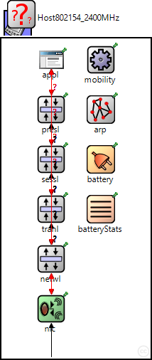
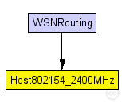
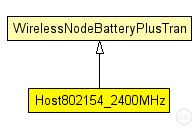

This documentation is released under the Creative Commons license
This documentation is released under the Creative Commons licenseThis NED module defines a host using an IEEE 802.15.4 transceiver at 2.4GHz for wireless communications, that can be used to simulate wireless sensor networks.
For instance, you can use it to compare your own MAC protocol to the 802.15.4 non beacon enabled MAC protocol, or to evaluate IEEE 802.15.4 wireless sensor networks. It is also a good starting point to define your own Host file.
This model was independently validated on a wireless sensor network testbed. For more information, see Accurate Timeliness Simulations for Real-Time Wireless Sensor Networks, J. Rousselot, J.-D. Decotignie, M. Aoun, P. van der Stok, R. Serna Oliver, G. Fohler. In Proceedings of the 2009 Third UKSim European Symposium on Computer Modeling and Simulation. http://dx.doi.org/10.1109/EMS.2009.34.
Author: Jérôme Rousselot
The following diagram shows usage relationships between types. Unresolved types are missing from the diagram. Click here to see the full picture.
The following diagram shows inheritance relationships for this type. Unresolved types are missing from the diagram. Click here to see the full picture.
| Name | Type | Description |
|---|---|---|
| WirelessNodeBatteryPlusTran | compound module | (no description) |
| Name | Type | Description |
|---|---|---|
| WSNRouting | network |
This example shows how to simulate wireless sensor networks. Three different routing protocols are considered, for different traffic types: convergecast, with Wiseroute; network-level broadcast, with flooding; and probabilistic broadcast. |
| Name | Type | Default value | Description |
|---|---|---|---|
| networkType | string | "BaseNetwLayer" |
type of the network layer |
| transportType | string | "Aggregation" |
type of the transport layer |
| sessionType | string | "" |
type of the session layer |
| presentationType | string | "" |
type of the presentation layer |
| applicationType | string | "SensorApplLayer" |
type of the application layer |
| mobilityType | string | "StationaryMobility" |
type of the mobility module |
| arpType | string | "org.mixim.modules.netw.ArpHost" |
type of address resolution module |
| nicType | string | "Nic802154_TI_CC2420" | |
| numHosts | int |
total number of hosts in the network |
| Name | Value | Description |
|---|---|---|
| display | bgb=210,450,white;i=device/palm;i2=status/battery;b=40,40,rect | |
| node |
| Name | Direction | Size | Description |
|---|---|---|---|
| radioIn | input |
gate for sendDirect |
| Name | Type | Default value | Description |
|---|---|---|---|
| netwl.stats | bool |
stats switch |
|
| netwl.headerLength | int |
length of the network packet header (in bits) |
|
| tranl.stats | bool |
stats switch |
|
| tranl.headerLength | int |
length of the network packet header (in bits) |
|
| sessl.stats | bool |
stats switch |
|
| sessl.headerLength | int |
length of the network packet header (in bits) |
|
| presl.stats | bool |
stats switch |
|
| presl.headerLength | int |
length of the network packet header (in bits) |
|
| appl.headerLength | int |
length of the application message header (in bits) |
|
| batteryStats.notAffectedByHostState | bool | true | |
| batteryStats.debug | bool | false |
write per-activity and per-device statistics to omnetpp.sca (if false, only total energy and lifetime are written) |
| batteryStats.detail | bool | true |
subscribe to battery status and record time series data in omnetpp.vec (resolution depends on battery's publishDelta) |
| batteryStats.timeSeries | bool | false | |
| battery.debug | bool | false | |
| battery.nominal | double |
nominal battery capacity |
|
| battery.capacity | double |
battery capacity |
|
| battery.voltage | double |
nominal voltage |
|
| battery.resolution | double |
capacity is updated at least every resolution time |
|
| battery.publishDelta | double |
if > 0, capacity is published to the BB each publishTime interval |
|
| battery.publishTime | double |
number of modules that will draw energy from the battery |
|
| battery.numDevices | int |
// // This NED module defines a host using an IEEE 802.15.4 transceiver at 2.4GHz // for wireless communications, that can be used to simulate wireless sensor // networks. // // For instance, you can use it to compare your own MAC protocol to // the 802.15.4 non beacon enabled MAC protocol, or to evaluate IEEE 802.15.4 // wireless sensor networks. It is also a good starting point to define your // own Host file. // // This model was independently validated on a wireless sensor network testbed. // For more information, see // Accurate Timeliness Simulations for Real-Time Wireless Sensor Networks, // J. Rousselot, J.-D. Decotignie, M. Aoun, P. van der Stok, R. Serna Oliver, // G. Fohler. In Proceedings of the 2009 Third UKSim European Symposium on Computer // Modeling and Simulation. <a href="http://dx.doi.org/10.1109/EMS.2009.34">http://dx.doi.org/10.1109/EMS.2009.34</a>. // // @author Jérôme Rousselot // module Host802154_2400MHz extends WirelessNodeBatteryPlusTran { parameters: int numHosts; // total number of hosts in the network applicationType = default("SensorApplLayer"); transportType = default("Aggregation"); nicType = default("Nic802154_TI_CC2420"); //type of used nic arpType = default("org.mixim.modules.netw.ArpHost"); batteryStats.detail = default(false); batteryStats.timeSeries = default(false); battery.nominal = default(1000 mAh); battery.capacity = default(battery.nominal); battery.voltage = default(3 V); battery.resolution = default(60 s); battery.publishDelta = default(1); battery.publishTime = default(battery.resolution); battery.numDevices = default(1); }
This documentation is released under the Creative Commons license